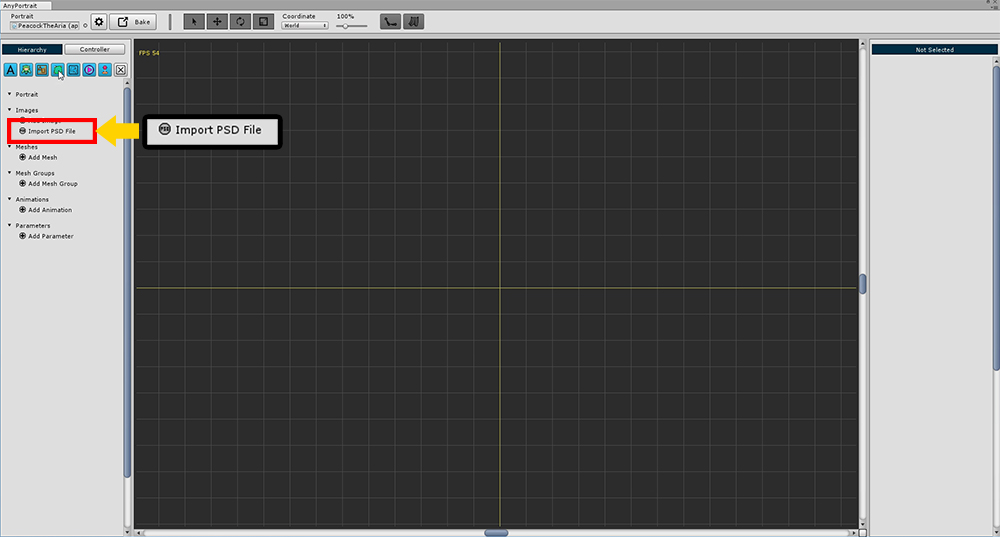
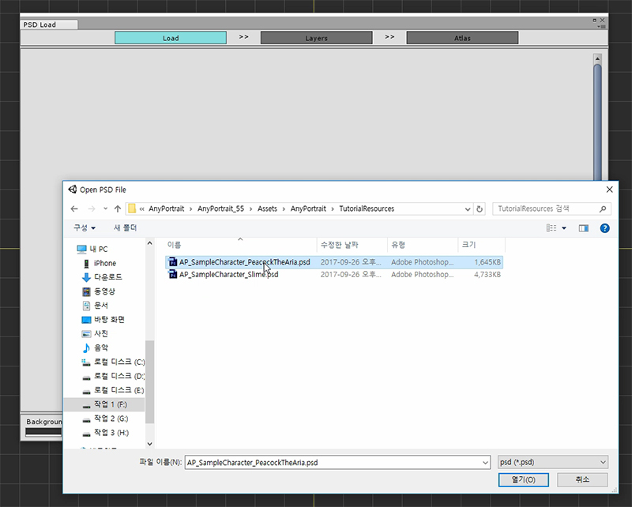
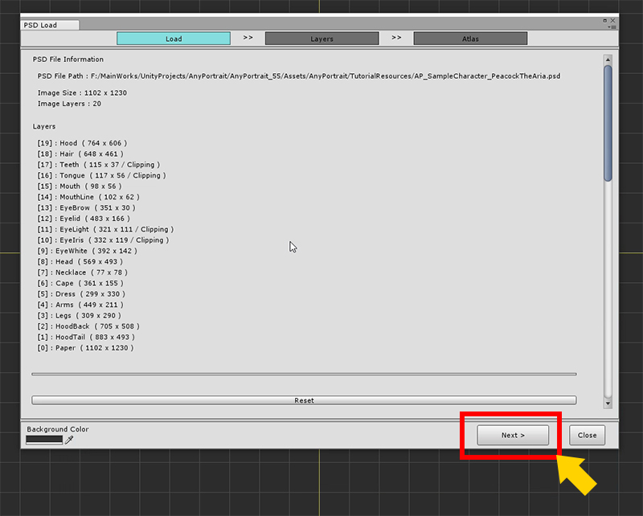
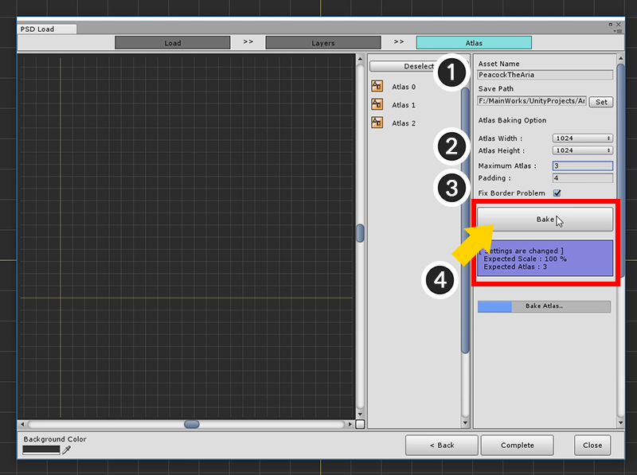

AnyPortrait > 시작하기 > 2.1. PSD 파일을 불러오기
2.1. PSD 파일을 불러오기
1.0.0
일러스트의 대부분은 레이어 정보가 포함된 파일로 존재합니다.
AnyPortrait에서는 레이어 정보를 이용하여 한번에 메시 그룹을 만드는 기능을 제공합니다.
튜토리얼 패키지에 포함된 이미지를 이용, PSD 파일을 열어서 쉽게 작업을 시작하도록 해보겠습니다.

새로운 apPortrait를 만들고 Import PSD File 버튼을 눌러줍니다.

첫 페이지의 Load PSD File 버튼을 눌러줍니다.

패키지에서 제공하는 AP_SampleCharacter_PeacockTheArea.psd 파일을 선택해서 엽니다.
(PSD 파일 경로가 꼭 Assets 폴더 안에 있을 필요는 없습니다.)

정상적으로 파일이 열렸는지 확인하고 Next 버튼을 누릅니다.

두번째 페이지인 "Layers" 페이지로 이동하면 로드된 레이어 이미지들이 나타납니다.
여기서 필요없는 레이어를 제외해야합니다.
(1) 맨 밑의 Paper 레이어를 선택하고, (2) Bake Target을 해제합니다.
모든 설정이 끝났으면 (3) Next 버튼을 눌러서 다음 페이지로 넘어갑니다.

이제 PSD 파일을 몇개의 이미지로 만들어서 에셋으로 만드는 과정입니다. 여기서는 이를 Bake로 부릅니다.
(1) 이미지 파일의 이름을 지정하고 에셋으로서 저장되는 경로를 설정합니다. (Set 버튼을 경로를 선택하세요.)
(2) 이미지 Atlas의 크기를 설정합니다. 1024 또는 2048을 권장합니다.
(3) 최대로 몇 개의 이미지로 나누어 Bake 할지 결정합니다. 적은 개수로 지정하면 전체적으로 축소가 되어 Bake가 됩니다.
Padding을 추가로 설정하고, Fix Border Problem을 설정합니다. (Fix Border Problem을 체크하면 가장자리에서 나타나는 반투명 색에서의 문제를 해결할 수 있습니다.)
(4) Bake 버튼을 눌러서 Atlas를 생성합니다.

Atlas가 모두 만들어졌으면 Complete 버튼을 눌러줍니다.

자동으로 이미지와 메시, 메시 그룹이 모두 생성된 것을 확인할 수 있습니다.
PSD로부터 불러온 Atlas 이미지 화질이 좋지 않아요

PSD로부터 만들어진 Atlas들은 에셋으로 저장됩니다.
Texture Import 설정에 따라 기본값으로 지정되기 때문에 지나치게 압축이 되거나 의도치 않은 밉맵 생성등이 있을 수 있습니다.
캐릭터 일러스트의 경우 압축을 하지 않거나 밉맵을 설정하지 않는 등의 퀄리티를 위한 처리가 필요할 수 있습니다.
PSD 파일을 로드한 직후에는 이미지 에셋 설정을 확인하세요.
관련 페이지에서 자세한 내용을 확인하세요.